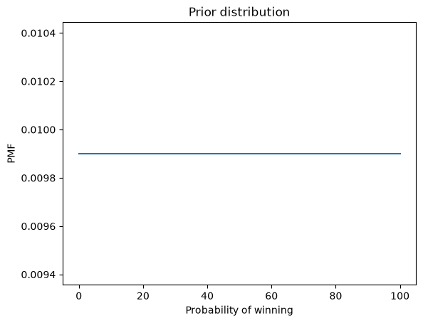
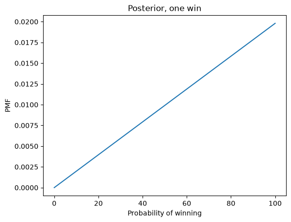
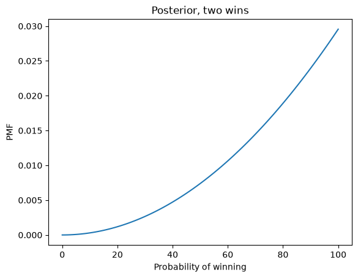
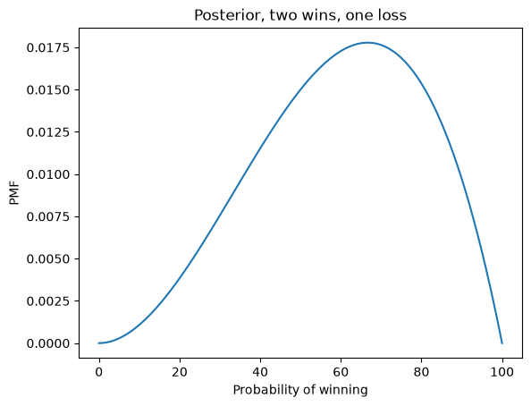
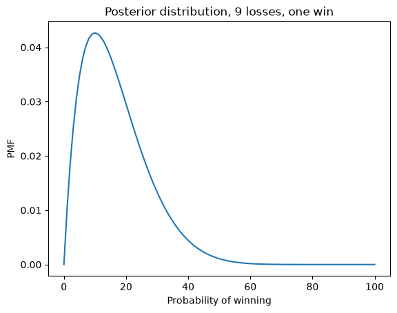
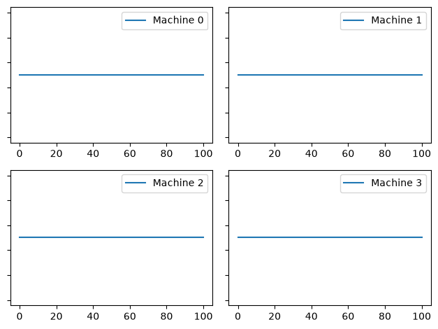
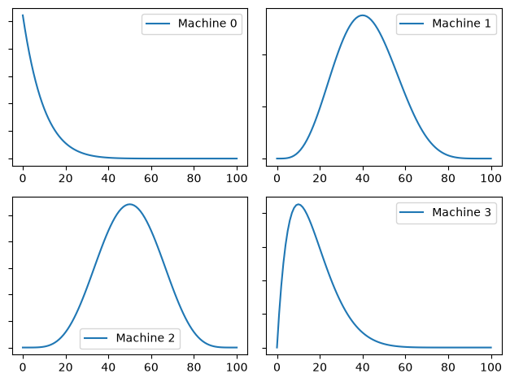
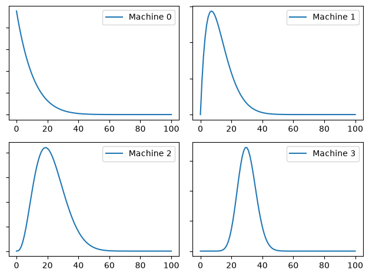

From Bayes’s Theorem to Bayesian Bandits#
Examples and exercises for the tutorial Bayesian Decision Analysis.
Click here to run this notebook on Colab. For the exercises, use the version with blanks.
import numpy as np
import pandas as pd
import matplotlib.pyplot as plt
np.set_printoptions(legacy='1.25')
The Five Urn Problem#
Let’s start by solving the Five Urn problem using a pandas Series to represent a Probability Mass Function (PMF).
The key idea is that the index of the Series represents a set of hypotheses and the values of the Series represent the corresponding probabilities.
You have five urns that contain blue and yellow marbles:
Urn 0 contains 0% blue marbles.
Urn 1 contains 25% blue marbles.
Urn 2 contains 50% blue marbles.
Urn 3 contains 75% blue marbles.
Urn 4 contains 100% blue marbles.
You choose an urn, choose a marble, and it’s blue.
What is the posterior probability that you chose each urn?
I’ll use integers to represent the hypotheses, so 0 represents the hypothesis that we chose from Urn 0.
The prior probabilities are equal for the five hypotheses.
hypos = [0, 1, 2, 3, 4]
prior = pd.Series(1/5, hypos)
prior
0 0.2
1 0.2
2 0.2
3 0.2
4 0.2
dtype: float64
If we chose from Urn \(i\), the probability of getting a blue marble is \(i/4\). So that’s the likelihood of the data.
likelihood = np.array(hypos) / 4
likelihood
array([0. , 0.25, 0.5 , 0.75, 1. ])
Here’s the fundamental step of all Bayesian updates, multiplying the prior by the likelihood.
posterior = prior * likelihood
posterior
0 0.00
1 0.05
2 0.10
3 0.15
4 0.20
dtype: float64
The sum of these products is the total probability of the data.
prob_data = posterior.sum()
prob_data
0.5
The last step is to normalize the posterior probabilities by dividing through by the probability of the data.
posterior /= prob_data
posterior
0 0.0
1 0.1
2 0.2
3 0.3
4 0.4
dtype: float64
These are the posterior probabilities for the five urns.
The Bayesian Bandit Problem#
Now let’s get to the Bayesian Bandit problem, which is a model for many kinds of A/B testing, including medical trials.
Suppose you have several “one-armed bandit” slot machines, and there’s reason to think that they have different probabilities of paying off.
Each time you play a machine, you either win or lose, and you can use the outcome to update your belief about the probability of winning.
Then, to decide which machine to play next, you can use the “Bayesian bandit” strategy, explained below.
First, let’s see how to do the update.
The prior#
If we know nothing about the probability of winning, we can start with a uniform prior. We’ll use integers from 0 to 100 to represent hypothetical probabilities of winning (as percentages).
xs = np.arange(101)
p = 1 / len(xs)
prior = pd.Series(p, index=xs)
prior.head()
0 0.009901
1 0.009901
2 0.009901
3 0.009901
4 0.009901
dtype: float64
def decorate(title=""):
"""Labels the axes.
title: string
"""
plt.xlabel("Probability of winning")
plt.ylabel("PMF")
plt.title(title)
prior.plot()
decorate("Prior distribution")

Bayesian Update#
The prior represents what we believe about possible values of x before we have any data.
Now suppose we play a machine once and win.
What should we believe about x now?
We can answer that question by computing the likelihood of the data, a win, for each value of x.
If x is 50, the probability of winning is 0.5.
If x is 75, the probability is 0.75.
In general, we can compute the probabilities by dividing the values of x by 100.
likelihood_win = xs / 100
posterior = prior * likelihood_win
posterior.sum()
0.5000000000000001
posterior /= posterior.sum()
posterior.plot()
decorate("Posterior, one win")

Suppose we play the same machine and win again. We can do a second update, using the posterior from the first update as the prior for the second.
posterior2 = posterior * likelihood_win
posterior2 /= posterior2.sum()
posterior2.plot()
decorate("Posterior, two wins")

And suppose we play one more time and lose. Now we need the likelihood of losing for each value of x.
likelihood_loss = 1 - likelihood_win
And here’s the update.
posterior3 = posterior2 * likelihood_loss
posterior3 /= posterior3.sum()
posterior3.plot()
decorate("Posterior, two wins, one loss")

The update function#
The following function takes as parameters a Pandas Series that represents the prior distribution and a string that represents the data: either W if we won or L if we lost.
def update(pmf, data):
"""Update a PMF with the outcome of one play.
pmf: Series that maps hypotheses to probabilities
data: string, either 'W' or 'L'
"""
if data == "W":
likelihood = likelihood_win
else:
likelihood = likelihood_loss
pmf *= likelihood
pmf /= pmf.sum()
It uses likelihood_win or likelihood_loss, depending on the data, then updates pmf by multiplying by the likelihood and dividing through by the probability of the data.
pmf = prior.copy()
update(pmf, "W")
update(pmf, "W")
update(pmf, "L")
pmf.plot()
decorate("Posterior, two wins, one loss")
Exercise#
Suppose you play a machine 10 times and win once. What is the posterior distribution of \(x\)?
outcomes = "WLLLLLLLLL"
# Solution
pmf = prior.copy()
for outcome in outcomes:
update(pmf, outcome)
pmf.plot()
decorate("Posterior distribution, 9 losses, one win")

Multiple bandits#
Now suppose we have several bandits and we want to decide which one to play.
For this example, suppose we have 4 machines with these probabilities:
actual_probs = [0.0, 0.1, 0.2, 0.3]
For purposes of the example, we should assume that we do not know these probabilities.
The function play simulates playing one machine once and returns W or L.
from random import random
def flip(p):
"""Return True with probability p."""
return random() < p
from collections import Counter
# count how many times we've played each machine
counter = Counter()
def play(i):
"""Play machine i.
returns: string 'W' or 'L'
"""
counter[i] += 1
p = actual_probs[i]
if flip(p):
return "W"
else:
return "L"
Here’s a test, playing machine 3 ten times:
for i in range(10):
outcome = play(3)
print(outcome, end=" ")
L W L L W L W L W W
Now I’ll make four copies of the prior to represent our beliefs about the four machines.
beliefs = [prior.copy() for i in range(4)]
This function displays four distributions in a grid.
def plot(beliefs, **options):
for i, b in enumerate(beliefs):
plt.subplot(2, 2, i + 1)
b.plot(label="Machine %s" % i)
plt.gca().set_yticklabels([])
plt.legend()
plt.tight_layout()
plot(beliefs)

As an example, let’s play each machine 10 times, then plot the posterior distributions.
for i in range(4):
for _ in range(10):
outcome = play(i)
update(beliefs[i], outcome)
plot(beliefs)

Bayesian Bandits#
To get more information, we could play each machine 100 times, but while we are gathering data, we are not making good use of it. The kernel of the Bayesian Bandits algorithm is that it collects and uses data at the same time. In other words, it balances exploration and exploitation.
To do that, it draws a random value from each distribution and chooses the machine that generates the largest value.
The following function takes a PMF and chooses a random value from it, using the probabilities as weights.
def pmf_choice(pmf):
"""Draw a random sample from a PMF.
pmf: Series representing a PMF
returns: quantity from PMF
"""
return np.random.choice(a=pmf.index, p=pmf.values)
Here’s an example.
pmf_choice(beliefs[0])
18
The following function uses pmf_choice to choose one value from the posterior distribution of each machine and then uses argmax to find the index of the machine that chose the highest value.
def choose(beliefs):
"""Use the Bayesian bandit strategy to choose a machine.
Draws a sample from each distribution.
returns: index of the machine that yielded the highest value
"""
ps = [pmf_choice(b) for b in beliefs]
return np.argmax(ps)
Here’s an example.
choose(beliefs)
2
choose has the property that the probability of choosing each machine is equal to its “probability of superiority”.
Exercise#
Putting it all together, fill in the following function to choose a machine, play once, and update beliefs:
def choose_play_update(beliefs, verbose=False):
"""Choose a machine, play it, and update beliefs.
beliefs: list of Pmf objects
verbose: Boolean, whether to print results
"""
# choose a machine
machine = ____
# play it
outcome = ____
# update beliefs
update(____)
if verbose:
print(machine, outcome)
# Solution
def choose_play_update(beliefs, verbose=False):
"""Choose a machine, play it, and update beliefs.
beliefs: list of Pmf objects
verbose: Boolean, whether to print results
"""
# choose a machine
machine = choose(beliefs)
# play it
outcome = play(machine)
# update beliefs
update(beliefs[machine], outcome)
if verbose:
print(machine, outcome)
Here’s an example:
choose_play_update(beliefs, verbose=True)
0 L
Trying it out#
Let’s start again with a fresh set of machines and an empty Counter.
beliefs = [prior.copy() for i in range(4)]
counter = Counter()
If we run the bandit algorithm 100 times, we can see how beliefs gets updated:
num_plays = 100
for i in range(num_plays):
choose_play_update(beliefs)
plot(beliefs)

The estimates are still rough, especially for the lower-probability machines. But that’s a feature, not a bug: the goal is to play the high-probability machines most often. Making the estimates more precise is a means to that end, but not an end in itself.
Let’s see how many times each machine got played. If things go according to plan, the machines with higher probabilities should get played more often.
for machine, count in sorted(counter.items()):
print(machine, count)
0 9
1 14
2 16
3 61
Exercise#
Go back and run this section again with a different value of num_plays and see how it does.
Summary#
The algorithm I presented in this notebook is called Thompson sampling. It is an example of a general strategy called Bayesian decision theory, which is the idea of using a posterior distribution as part of a decision-making process, usually by choosing an action that minimizes the costs we expect on average (or maximizes a benefit).
In my opinion, this strategy is the biggest advantage of Bayesian methods over classical statistics. When we represent knowledge in the form of probability distributions, Bayes’s theorem tells us how to change our beliefs as we get more data, and Bayesian decision theory tells us how to make that knowledge actionable.
Copyright 2022–2026 Allen Downey
Code license: MIT License
Text license: Creative Commons Attribution-NonCommercial-ShareAlike 4.0 International